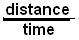

The Derivative/Chapter 14
The derivative, or "rate of change", is used to
describe how quickly quantities change. Historically, it helped deal with
problems of how a pendulum swings, how planets (as well as space satelllites)
move in their orbits, the velocity of a cannon shell, car, light, and electrons
in a wire.
Both the derivative and the integral involve infinite sequences
and infinite series and their limits. The derivative deals with an infinite
sequence of slopes of secant lines approaching the tangent to a
curve; the integral deals with an infinite
series of areas under a curve, which in turn involves infinite
sequences.
1.
Slope,
rate and ratio. We started graphing in chapter 1 but the bulk of it is
in chapter 6; the graphing is important because the derivative can best be
shown this way. Let's look at the graph of 2x = y. Notice that if you go one unit to the
right, you go up 2 units. This ratio
of
, or
or
is called the slope of the graph.
The idea of slope appears in many contexts; for example, the slope of
a
ramp (see Alec's work later), the pitch of a roof (which is 1/2 the slope of the roof), and
the gradient of a road. If you were measuring the time an ant moved along
the ground, you might let the x-axis represent the time and the y-axis
represent the distance travelled by the ant. Then the slope of this graph, 2,
|
|
would represent the average rate of speed,  of the ant, say 2 centimeters per
second. This idea of rate or ratio is used in many ways; for example-- interest
rates,
(# of dollars per 100 dollars, the word "per"
means "divided by"- 6% means 6/100), exchange rate, inflation rate, discount rate,
pressure in tires (lbs. per sq. in.), typing speed, film speed, shutter speed,
wind speed, population density (# of people per sq. km.), density of materials
(mass per unit volume- g/cc), cost of food in price per g), frequency of
electromagnetic radiation (hertz or cycles per second), speed of light, speed of
sound, pollution rate (parts per million), postal rates, shipping rates, rpm
(revolutions per minute of a car engine or turntable), pulse rate (beats per
minute), crop yield (bu. per hectare), flow of a stream or blood,
signal-to-noise ratio, gear ratios, trig ratios (sine, cosine, tangent),
probability of an event, batting averages, e.r.a., and growth rates, just to
mention a few.
|
|
The other thing we can say about the graph and
data of the ant is that the distance the ant travels is a function of
time. Of course we won't get a
nice simple graph from real data. We talked about functions or guess the
rule, in chapter 6. We should also look at the differences in the
y-numbers.
The y-number
goes up by 2 as the x-number
goes up by 1, which shows up as the slope on the graph!
|
2. Linear graphs and their slopes
See graphs and slope on map
3. Alec finds the slope of a wheelchair-access ramp
4. Stories
from graphs-The following are problems from "The Language of Functions
and Graphs" published by The Shell Centre for Mathematical Education,
University of
Nottingham
. They lead into the following problem of the derivative very nicely. Choose the
best graph to describe each of the situations listed below. Copy the
|
graph and label the axes clearly with the
variables shown in brackets. If you cannot find the graph you want, then
draw your own version and explain it fully.
1) The weightlifter held the bar over his head
for a few unsteady seconds, and then with a violent crash he dropped it.
(height of bar/time)
2) When I started to learn the guitar, I
initially made very rapid progress. But I have found that the better you
get, the more difficult it is to improve still further.
(proficiency/amount of practice)
3) If schoolwork is too easy, you don't learn
anything from doing it. On the other hand, if it is so difficult that you
cannot understand it, again you don't learn. That is why it is so
important to pitch work at the right level of difficulty (educational
value/difficulty of work)
|
|
|
4) When jogging, I try to start off slowly, build
up to a comfortable speed and then slow down gradually as I near the end
of a session. (distance/time)
5) "In general, larger animals live longer
than smaller animals and their hearts beat slower.
With twenty-five million heartbeats per life as a rule of thumb, we
find that the rat lives for only three years, the rabbit seven and the
elephant and whale even longer. As respiration is coupled with
heartbeat--usually one breath is taken every four heartbeats--the rate of
breathing also decreases with increasing size. (heart rate/life span)
6) As for 5, except the variables are (heart
rate/breathing rate)
Now make up three stories of your own to
accompany three of the remaining graphs. Pass your stories to your
neighbor. Can they choose the correct graphs to go with the stories?
|
|
Jonathan's Mom wrote: "Jonathan suggested a
story about tornadoes and low pressure areas; we ended up with the graph
at the right:
note: we didn't know if this 'jives' with
scientific fact, but we had fun with the discussion."
|
|
Check the answers to the stories
from graphs, and the numbers for the slopes above.
|
5. Use
your pencil to approximate the slope of the tangent to various curves, at certain
points:
Now comes the big change. We've been finding the slopes
of straight lines, now the question is what is the slope of a
curved line?
Well it changes, right? So what we do is find the slope
of the straight line that touches the curve at one point or we say is tangent to
the curve at that point.
Shown at the right is the graph of y
= x2.
Put your pencil (the dark line) next to the curve at various points and try to
approximate the slopes of these lines. At (1,1) the slope is about 2.
At the right is the graph of the x-coordinate of the point above vs the
approximate slope of the tangent line at that point. So at (1,1) the slope is
about 2, so we plot the point (1,2). Plot more points on this graph.
What
do you notice?
|
|
|
6.
Using
the computer/calculator to
"zoom in" on a curve at a point and then finding the slope of
the tangent to the curve at that point.
At the right are pictures of a computer screen in Derive,
reduced in size, starting with the graph of y=x2
with the cross at the point (1,1) and a scale of x:1, y:1.Each
dot is 1 unit apart vertically and horizontally. We then "zoom
in" on the graph, at the point (1,1). What does "zooming
in" essentially do? It changes the scale on the axes.
The second graph shows the same
curve, again centered at (1,1), but the scale is x:0.2, y:0.2
The third graph ends up 0.02 of a
unit apart . Notice what happens. In this small portion of the graph, the
curve looks like a straight line, as far as the eye can see! The slope of
this line then is essentially the slope
of the curve or the slope of the line tangent to the curve at the
point (1,1). Using the dots on the screen, we can find the slope
of this line, which is 2, the
slope of the tangent to the curve at (1,1).
We can then do the same thing at
various points on the curve y=x2 and
try to find a rule relating the x-coordinate of the point to the slope of the tangent to the
curve at that point. This rule you find will be the derivative of x2.
I think this idea makes the derivative, which I used to think was a
difficult concept, into something very simple.
Fill in the table below, then write a rule:
|

|
what do you get for the rule?
|
We'll do one more example of the zooming in on a curve, then we'll see how
we can do this without the computer. This is exciting!
At the right are 3 computer screens in Derive
with part of the graph of y =
,
or part of the top half of the circle x2 +
y2 =
25 whose center is at (0,0) with a radius of 5 units. We then zoom in on
that curve at the point (3,4).
The second screen picture is of the same curve,
with the cross still at (3,4), but the scale is 0.2 this time.
The third screen picture is of the same curve, with the cross still at
(3,4), but the scale is 0.01 this time.
What do you get for the slope of this
"straight" section of the curve?
-3/4
How is the slope related to the coordinates of
the point?
Could you predict the slope of this curve at the
point (4,3)? -4/3 , yes.
Would you predict the slope of the tangent to the
circle at the point (x,y)?
|

|
++++++++++++++++++++++++++++++++++++++++++++++++++++++++++++++++++
The slope of tangent at any point on a circle (the derivative, written as f'(x) or y' or dy/dx)
x2 + y2 = 25
do implicit differentiation
2x + 2ydy/dx = 0
solve for dy/dx
dy/dx = -x/y does this agree with what you found above?
Suppose you don't have a computer to "zoom in" on the curve x2,
can you do this? SURE! Let's look at the slope of the secant line AB
from A at (3,32) to
B (3.0001, 3.00012).

The slope of the secant line approaches the slope of the tangent line (in
red) and approaches 6 (above it comes out to be 6.0001
Zoom in on other points like (1,2) and (2,4), and some others, and make a
table like this:
x-coordinate slope of tangent
1
2
3
6
Find a rule for these pairs of numbers; this will be the derivative of x2
.
7. Derivatives as done in textbooks
A few of words about Ian, who started working with me in 3rd grade, through
HS. From Feb. 1982 to Feb. 1983 Ian went through a very prodigious period of
mathematical discovery (not to diminish his earlier and now I can say, his later
work). He told me he was doing things in his calculus class like using the
properties of the Nautilus shell, that of constant ratio of distances from the
center and constant angle (as Yao
did in chapter 6), to show it is a logarithmic curve. He also made a Chinese
Ring Puzzle in his calculus class and gave it to me as a gift. In his last year
of HS he asked if he could teach with me in my summer classes! Needless to say I
was very pleased and honored to have him do that.
In January of 1982, at age 11, upon my suggestion, he started reading W. W.
Sawyer's "What is Calculus About?". During this year he figured out
the derivative of xn and
discovered the fundamental theorem of the calculus (see below). He did some work
on Maclaurin's Theorem, as well as his work on the binomial theorem and Pascal's
triangle (in chapter 9 on the Map). My role as the teacher was one of giving a
few suggestions. I always felt I was not really teaching Ian much at all, but
providing an atmosphere in which he could "learn to learn" as he put
it. He was always raising questions, pondering the mathematics. I dare say,
through about age 14, Ian spent more time thinking about mathematics than 90% of
us do in our lifetime, combined! I think I learned a lot from him also. Although
Ian is an unusual young man, I have worked with many others, including girls,
who are capable of much more than I ever thought possible. If we believe young
people can do great things, they will do it -- I am convinced of that. But I am
also convinced there has to be a big change in how
this is done with young people. I think all too often curricular changes come
from textbook salesmen and college professors, neither of whom have ever worked
with young people (this is changing some). There is rarely a student comes to me
saying I figured this or that out. A classic case is derivatives and integrals;
young people can see patterns and can figure out patterns- see below how this
works. That's why what Bob Davis did in the 60's and 70's was so important,
because he did it with young people and showed me the way! Get hold of Robert B. Davis' books -Discovery and Explorations in Mathematics- in the bibliography. Ian
went on to Oberlin College for his B.A. and received a Ph.D. in Mathematics at
The University of Chicago.
At some point when Ian was 11 years old, he and I went
through the following discussion to get the derivative of x2,
which is the slope of the tangent to the curve y=x2 at
any point (x, x2).
This then led to the derivative of xn and
other functions.We found the slopes of the curves above in 2 ways, by putting
our pencil next to the curve and approximating the slopes of these lines, then
we zoomed in on the graph at certain points and calculated the slope of a line
very close to the tangent to the curve.
Now our strategy will be to find the slopes of lines
from point A, to points to the right of it on the curve, like B, then from A to
C and so on, getting closer and closer to point A. We will get an infinite
sequence of slopes of secant lines, which will approach the slope of the tangent. The
limit of this sequence will be the slope of the tangent to the curve at the
point A.

The scales on the following graphs will be distorted in
order to show the straight lines clearly. Once we do one of these infinite
sequences of slopes, the rest of them will be easy, because there will be
patterns, as usual, which will make it possible to predict others.
| The first problem will be to find the slope of
the tangent to the curve
y = x2 at
the point (1,12), shown below. |
The slope of the line from the point (1,12)
to (2,22) is the diff in y's/diff in x's

|
|
|
|
| Now we'll find the slope of the straight line from (1,
12) to (1
1/2 ,(1
1/2)2) |
Now we'll find the slope of the straight line from (1,
12) to (1
1/3 ,(1
1/3)2) |
 |
 |
| |
|
| In finding the slope of the tangent to the
curve y=x2 at the point (1,12)
we found the slopes of the lines from (1, 12)
to (2,22); then (1,12)
to (1 1/2, (1 1/2)2),
then from (1,12) to (1 1/3,
(1 1/3)2), and the slopes
we got were 3, 2 +1/2, 2 + 1/3. The picture at the right shows the line
from (1,12) to (1 1/4,
(1+1/4)2), which turns out
to be

which is not surprising! |
 |
Let h be how
much we add to the x-coordinate of our point (1, 12). We will have h
decrease. Using
the pattern, we can extend this sequence of slopes
What's happening as h goes to zero? The limit of
this infinite sequence of slopes is 2,
or more formally,

The first term is read as the limit of the infinite sequence of
slopes of secant lines (difference in y's/difference in x's) as h
approaches zero, equals the slope of the tangent to the curve y=x2
at the point (1, 12) and is equal to 2.
To
find the slope of the tangent to the curve y=x2
at the point (3, 32), we would get

Filling in the table below showing the x-coordinate
and the slope of the tangent at that point, looks like this:
x-coordinate
1 2
3 4
5 .. 10
.. x
slope of tangent
2
6 8
10 .. 20
.. 2x
In general then, the slope of the tangent
to the curve y = x2
at the point (x, x2) is

So the slope of the curve
or DERIVATIVE of y = x2
is
2x.
Can you predict the slope of the tangent
to the curve y = x3
at the point (x, x3) ?
Try to see if you are right!
Notice,
in the definition of the derivative above, h approaches zero, but is never zero.
[Don had
Sheri as a 4-6th grader, (search Sheri to see what she did), then she went to University High School. She came back
as a 12th grader, in the Summer of 2008, to prepare for Calculus. Don worked with her for about
3 hrs. individually over the last month before school started. Today, a week into her calculus class,
she told me "What we did the last 3 weeks (derivatives), the teacher
did with my class in one day, and I was like the only one in the class that
understood what she was talking about! It really helped for me to talk with you
about the problems as I worked on them".
It's been a pleasure working with
you Sheri, as well as your sister, your mother, 2 aunts, and 2 cousins over the
years- what a wonderful family!
On this day June
6, 2010,
Don & Mrs. Cohen met Sheri, on the way out of a restaurant where she was
working. It was great to see her. She will be a sophomore at the U of Michigan
in the Fall, loving it, majoring in Neuroscience, and hopes to be a doctor! Her
sister Amanda whom Don also worked with, will be a senior at the U of CA, San
Diego, and is planning to go to law school.
Besides
seeing his own children, grandchildren and greatgrandchilden grow up, it's also
a pleasure seeing his students grow up. Especially when he has had their
children; Jenny helped Don set up his website and Jonathan, has
helped make his A Map to Calculus clickable! Don feels very fortunate to
have positively affected so many young people. Mrs. Cohen has been the greatest
supporter of his work and the love of his life for the last 57 years.]
At age 11,
Ian realized that he could go down, starting with y= x4 ,
taking the derivative until he got 0, or go up, taking the integral! He used the following notation to show this:
y
-2' =
x6/30
y
-1' = x5/5
he started here y 0' =
x4
y
1' =
4x3
y
2' =
12x2
Ian's notation for the 2nd derivative was y 2'
,
normally
written as y"
y
3' =
24x1
y
4' =
24
y
5' =
0
Thomas,
an 8th grader, wrote this program on the TI 82 which gives the derivative of a
monomial.
8. Tickertape & other applications of the derivative
Distance, velocity, acceleration...coming
Maximum pts - see
area of rectangles with perimeter 20 Kelda's work, or on the Map
Minimum points- see
perimeter of rectangles with area of 36 Maya's work, or the Map
9. Elizabeth asked Don about
the points of inflexion of a curve
Don said the points of inflexion are those for which the
function changes from concave down to concave up or vice-versa,OR the second
derivative changes signs (from + to - or vice-versa).
He imediately made up an function by multipling
(x+2)*(x-3)*(x-4) to get
x3
- 5x2 -2x+24
= y, which he knew would have roots of, or cross the x-axis at, -2, 3 and 4.
Below are the 4 graphs of
1.) the function f(x) = x
3
- 5x2 -2x+24
2.) the derivative of this function f
'(x) = 3x2
-10x-2
3.) the 2nd derivative of the function f
"(x) =
6x-10, and
finally
4.) the 3 graphs above, on the same axes
Plot[x3 -5*x2-2*x+24,{x,-3,6},PlotStyle'{Thickness[0.01]}]
Notice, the curve crosses the x-axis at -2, 3 and 4. There is
a relative maximum around -0.2 and a relative
minimum at about 3.5. Also the
slope of the original curve is positive from -'
to the relative maximum, is zero there, then the slope is negative as we go
right, until we come to the relative minimum at about 3.5, then the slope of the
original curve is positive to +'.
The derivative is the slope of the tangent to the curve. When
the derivative = 0, the original function will have a maximum and/or minimum point,
because at these points the tangent is horizontal, with slope = 0.
D[x3-5*x2-2*x+24,x]
= f'(x) =
-2-10x+3x2
which is the first derivative of the original
function.
To graph the 1st derivative.
Plot[-2-10x+3x2,{x,-3,6},PlotStyle'{Thickness[0.01]}]

Notice that if we set the 1st derivative
= 0, we'll find the x-coordinates of the maximum and minimum point of the
original curve:
NSolve[-2-10x+3x2'0]
{{x' -0.1892547876100073}, {x'
3.522588120943341}}
-0.1892547876100073... is the x- coordinate of the relative maximum point of
the original function and 3.522588120943341 is the x-coordinate of the relative
minimum point of the original function.
Now taking the second derivative of the original function (taking the
derivative of the 1st derivative):
D[-2-10 x+3x2,x]
f''(x)= -10+6x
Plot[-10+6*x,{x,-3,6}]

Solving this equation,which is the 2nd derivative
set equal to 0,
NSolve[-10 +6x'0]
{{x'1.6666666666666667`}}
gives the x-coordinate of the point at which the 2nd
derivative changes sign, from negative to positive and therefore the
original function has a point of inflexion at this point when x=1.666... Looking
at the original function, this is the point at which it changes from concave
down to concave up.
Now we'll graph the original function, the first derivative and the 2nd
derivative:
Plot[{x3-5*x2-2*x+243-5*x2-2*x+24,
-2-10x+3x2,
-10+6*x}, {x,-3,6}, PlotStyle'{Thickness[0.011],Thickness[0.011],Thickness[0.011]}]

The blue
graph is the original function f(x)= x3
- 5*x2
- 2*x + 24 , the purple
graph is first derivative f'(x)=
x2-10x-2,
and the green graph is the second derivative
f''(x) = 6x-10
The original function crosses the x- axis at -2, 3 and 4 and are the
roots of the equation set = to 0. The original function has a relative maximum
where the tangent to the curve is horizontal at x= -0.189, found by setting the
the first derivative = 0 and solve for x. Notice that the 1st derivative has the point
(-0.189,0) which confirms this. The original function also has a relative
minimum where the tangent to the curve is horizontal at x=3.522, and changes
from negative to positive, and the 1st derivative has a zero (crosses the x-axis
at (3.522, 0)). The black vertical line shows 3 things: the 2nd
derivative is zero at x=1.666 and changes from negative to positive
at this point (1.666,0). The 1st derivative is at a
minimum when x=1.66 and the original function has a
point of inflexion at x=1.666 (it changes from concave down to
concave up).
10. Polar plot of the Nautilus Shell and
its derivative
The Nautilus Shell function is
r = '(q*Cot[79.5*p/180])
Note: [0.185339.. = Cot(79.5*p/180)], so
r = '0.185339*
q
A Polar Plot graph of the Nautilus Shell in Mathematica
PolarPlot['0.185339*q,{q,0,6.28}]
We'll take the derivative of r = '0.185339*q
r'=D['0.185339*q,q]
r'
=
0.185339*'0.185339*q
Note above that the derivative of
ekx
= k*ekx
and the derivative
of ex
= ex, the only function that is the same as its
derivative!
Now we'll graph both r and r':
PolarPlot[{'0.185339*q,0.185339*'0.185339*q},{q,0,6.28}]
Notice from these graphs, the larger graph is the
Nautilus, which starts at 1 when q =
0 and goes to 3.2 (a growth of 3.2 times in 360o),
while the little spiral is a
fraction of the Nautilus, and grows from 0.185339 when q
= 0, to ~3.2*0.185339= ~0.6 in 360o . The two spirals have
the same growth ratio and the same angle of the tangent-it is really the same
spiral! Whoops, looks like I was wrong.. I graphed the spirals from theta (q)= -Pi to
4 Pi and got the graph below. I thought the little one would "run into" and
become the larger one. But NO. Will they intersect? NO. But the angle of the
tangent is the same (79.5o) and the growth rate of the radius is the
same (3.2) in 360o. The radius of the smaller spiral is always
0.185339 times the radius of the Nautilus shell.Can we say they are similar
spirals?!